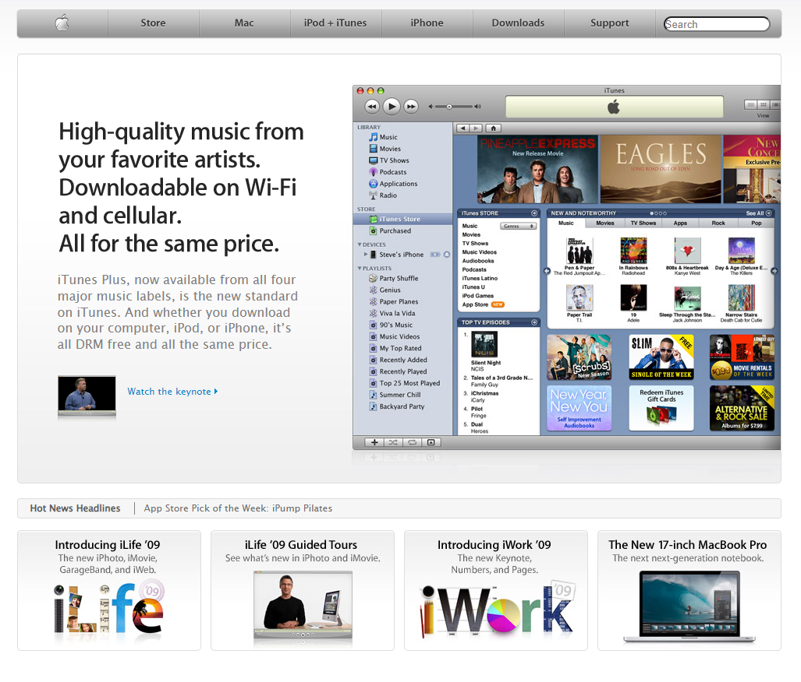

レトロデザインの研究
インターネットとレトロデザインについて深掘りする
研究テーマ
レトロデザインはどのようなものなのか？インターネット黎明期のウェブデザインを振り返り、現代におけるレトロデザインの意義と影響を探ります。
- レトロデザインの定義と特徴
- インターネット黎明期のデザイン事例
- 現代におけるレトロデザインの再評価
レトロデザインの定義と特徴
wayback machineはこちらからいけます
まず、レトロデザインをwayback machine を使い、先ずはmicrosoft.comに行き 2009年を調査し、
以下のような特徴を見出しました。
- レトロデザインは自分の世代でないのにも関わらず「懐かしさ」や「安心感」を与える
- レトロデザインを見て未来感を感じた
- レトロデザインはとても親しみやすい、ただ予想で定義したシンプルとはかけ離れている
- レトロデザインには画像を多用しているためロードに時間がかかることがある
- レトロデザインはグラデーション、透明度を多用している
そして象徴的な要素として、以下のようなものが挙げられます。
- レトロデザインには透明感があり、実写的な表現が多い
- レトロデザインには懐かしさを感じさせる要素がある
- レトロデザインにはシンプルさと複雑さが共存している
- レトロデザインには手触り感や質感が重視される
- レトロデザインには色彩の豊かさがある
インターネット黎明期のデザイン事象
これから昔のサイトのデザインについて画像とURLを紹介します
例1: Microsoft.com (2009年)
例2: Yahoo.com (2009年)
これは昔のブラウザでしか開けないようです。
例3: Google.com (2009年)
例4: Apple.com (2009年)
例5: Facebook.com (2009年)
例6: Twitter.com (2009年)

例7: bing.com (2009年)
現代におけるレトロデザインの再評価
現代ではレトロデザインが再評価され、特にデジタルアートやウェブデザインにおいてその影響が見られます。
その例として以下のようなジャンルがGen Z(Z世代)に人気です、そこにはそれを懐かしむ声や新たな解釈が見られます。
例1: Flutiger Aero
Flutiger Aeroは、07年代のデジタルデザインにインスパイアされたフォントスタイルで、
特にWindows 7などで採用された透明感やグラデーションが特徴のAeroスタイルを
使い特にレトロな雰囲気を持っています。
このスタイルは、現代のデジタルアートやウェブデザインにおいても人気があり、
特に若い世代に支持されています。
また、Flutiger Aeroはその独自のスタイルから、さまざまなメディアでの使用が広がっています。
※実はこのサイトのデザインにもFlutiger Aeroが使われています。
例2: Helvetica Aqua
Helvetica Aquaは2000年代初頭のデジタル文化を反映し、
Appleのデザイン哲学を体現したデザインスタイルです。
特に、透明感のある色使いやシンプルな形状が特徴です。
特にMacintosh OS X Pumaでの使用が知られています。
このスタイルもまたGen Z(Z世代)に人気があり、
特にレトロなデジタルアートやウェブデザインでの使用が増えています。
Helvetica Aquaは、シンプルでありながらも洗練されたデザインが特徴で、
現代のデジタルアートやウェブデザインにおいてもその影響が見られます。
例3: Retro Futurism
Retro Futurismは過去の未来像を再解釈し、レトロな要素と未来的なデザインを融合させたスタイルです。
特に、1980年代のサイエンスフィクションやポップカルチャーから影響を受けています。
このスタイルは、現代のデジタルアートやウェブデザインにおいても人気があり、特に若い世代に支持されています。
Retro Futurismは、過去の未来像を再解釈することで、
新たな視点や価値を提供し、現代のデジタルアートやウェブデザインにおいてもその影響が見られます。
今後の展望
レトロデザインは単なる懐古趣味にとどまらず、現代のデジタル体験に新たな価値をもたらす可能性がある。今後も多様な分野での応用が期待される。